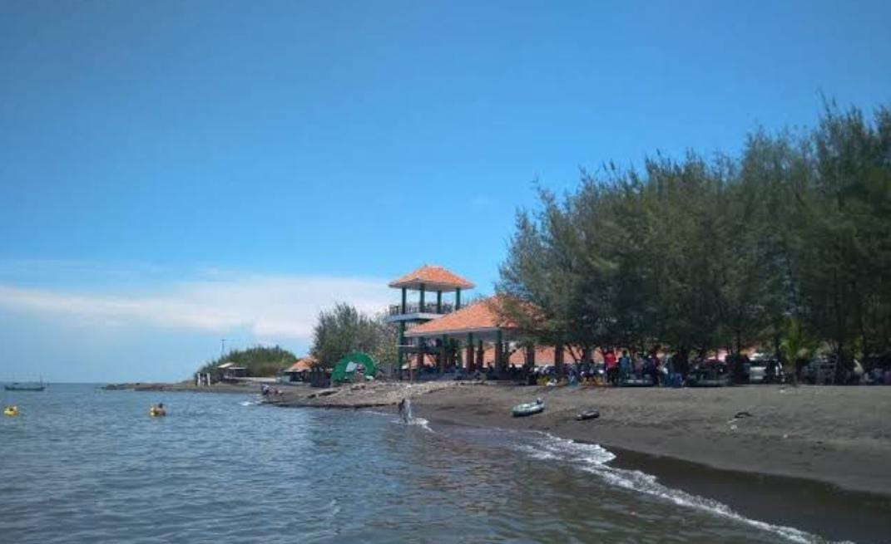

Sejarah

Paiton adalah sebuah kecamatan di Kabupaten Probolinggo, Jawa Timur.
Kecamatan ini memiliki sejarah penting, salah satunya adalah penemuan
Candi Jabung di desa Jabung Candi. Candi ini merupakan tempat upacara
sraddha pada masa Majapahit.
Terdapat sisa-sisa jalur transportasi kereta api yang berupa pondasi jembatan dan rangkanya,
sedangkan bekas Stasiun Paiton sendiri dibongkar tahun 1985 dan digunakan sebagai Koramil dan
studio foto, sebagian lahan milik PT. KAI ini juga dijadikan rumah hunian oleh warga dengan status sewa.
Dulu juga terdapat pabrik gula yang hancur pada masa penjajahan Jepang antara tahun 1942-1943 dan sekarang
menjadi lapangan sepak bola, kantor pos, diknas Paiton, SMP BP, Kantor Pengairan dan Polsek Paiton. Sejarah
menempatkan Paiton sebagai tempat penting, dengan ditemukannya peninggalan purbakala Candi Jabung di desa
Jabung Candi tempat upacara sraddha diselenggarakan pada masa Majapahit.
Geografis
Secara geografis, Paiton terletak di tepi pantai utara provinsi Jawa Timur.
Wilayahnya berbatasan dengan Selat Madura di utara, Kecamatan Kraksaan
di sebelah barat, serta Kabupaten Situbondo di sisi Timur. Berada di
koordinat 7°43'30″S 113°32'32″E.
Wisata
Paiton adalah sebuah destinasi wisata yang menakjubkan di Indonesia yang terletak di Kabupaten Probolinggo, Jawa Timur.
Desa Paiton terkenal karena keindahan alamnya yang menakjubkan serta beragam atraksi wisata yang menarik untuk dikunjungi.
Salah satu daya tarik utama Paiton adalah pantainya yang menawan. Pantai di Paiton memiliki pasir putih yang lembut dan
air laut yang jernih. Pengunjung dapat menikmati berbagai aktivitas di pantai, mulai dari berjemur di bawah sinar matahari,
berenang, hingga berselancar di ombak yang menggoda.
Pantai Duta Paiton

Jika anda ingin pergi ke tempat wisata pantai duta Probolinggo anda
bisa menempuh perjalanan kurang lebih 45 menit dari gunung Bromo.
Liburan pun tidak akan mengecewakan karena tempat wisata pantai
Duta menyuguhkan pemandangan alam yang sangat eksotis, yakni
keindahan laut nan alami, adanya rimbunan pepohonan cemara nan
hijau yang pastinya membuat liburan anda semakin asyik, serta hamparan
pasir laut bersih, karena terbilang masih baru.
Pantai Binor Harmony
Pantai Binor Harmony atau yang lebih dikenal sebagi Pantai Bohay menjadi salah
satu destinasi wisata menarik di Probolinggo. Lokasinya berada dekat dengan perbatasan
Probolinggo-Situbondo dan mudah diakses dari Jalan Raya Pantura. Pemandangan dan fasilitas
yang ditawarkan mampu bikin pengunjung betah.Dari pantai ini, kamu dapat mengabadikan keindahan
alam berlatar PLTU Paiton. Kamu juga dapat menikmati keindahan bawah lautnya, serta menjelajah
kawasan pantai dengan aktivitas seru. Oleh karena itu, pantai ini selalu ramai wisatawan.